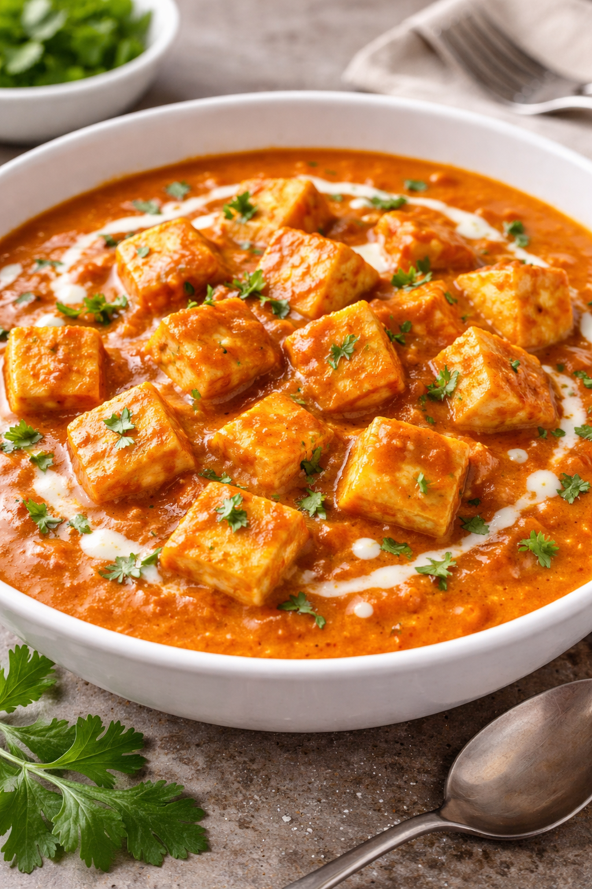

| Detail | Information |
|---|---|
| Preparation Time | 40 minutes |
| Difficulty | Medium |
| Ingredients |
• 200g paneer • 2 onions • 3 tomatoes • 2 tbsp butter • 2 tbsp cream • Spices (chili, turmeric, coriander, garam masala) • Salt & coriander leaves |
| Instructions |
1. Sauté onions in butter. 2. Add ginger-garlic paste. 3. Stir in tomato puree and spices. 4. Add paneer cubes. 5. Mix in cream and garam masala. 6. Garnish with coriander. |